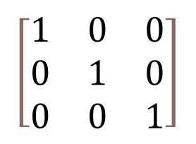
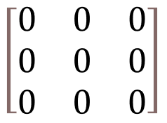
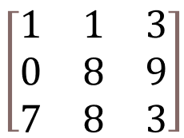
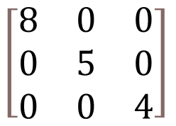
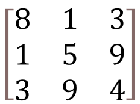
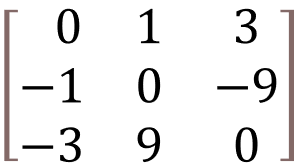
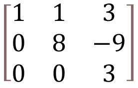
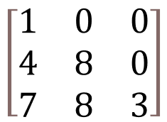
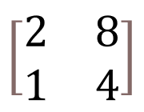

What is matrix?
Matrix is a set of numbers arranged in rows and columns so as to form a rectangular array. The numbers are called the elements, or entries, of the matrix. Matrices have wide applications in engineering, physics, economics, and statistics as well as in various branches of mathematics. Matrices also have important applications in computer graphics, where they have been used to represent rotations and other transformations of images.
Types of matrix
There are many different types of matrices, including:
Identity matrix
An identity matrix, sometimes called a unit matrix, is a diagonal matrix with all its diagonal elements equal to ones, and zeroes everywhere else.
Zero matrix
A zero matrix, or null matrix, is a matrix whose all elements are zeros.
Square matrix
A matrix is square if it has the same number of rows and columns.
Diagonal matrix
diagonal matrix is a square matrix whose off-diagonal entries are all equal to zero.
Symmetric matrix
symmetric matrix is a square matrix that is equal to its transpose matrix.
Antisymmetric Matrix
A matrix is antisymmetric if it is equal to its negative transpose.
Upper Triangular Matrix
A square matrix that has all the values in the upper-right, and the remaining values are filled with zero.
Lower Triangular Matrix
A square matrix that has all the values in the lower-left, and the remaining values are filled with zero.
Singular Matrix
A singular matrix is a square matrix whose determinant is zero.
History of matrix
Matrices were first used in Chinese mathematics for solving systems of linear equations. In modern mathematics, the concept of matrices was developed in the 19th century, with key contributions made by mathematicians such as Arthur Cayley and James Sylvester. Today, matrices play a crucial role in linear algebra and have wide applications in science, technology, and engineering.